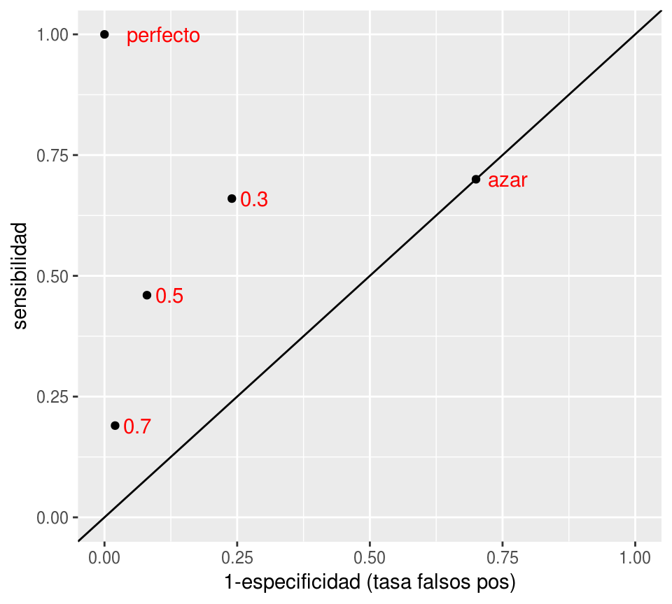
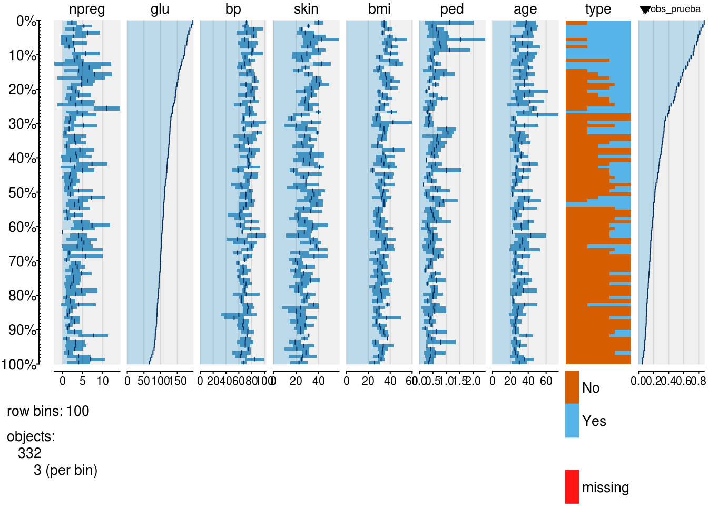
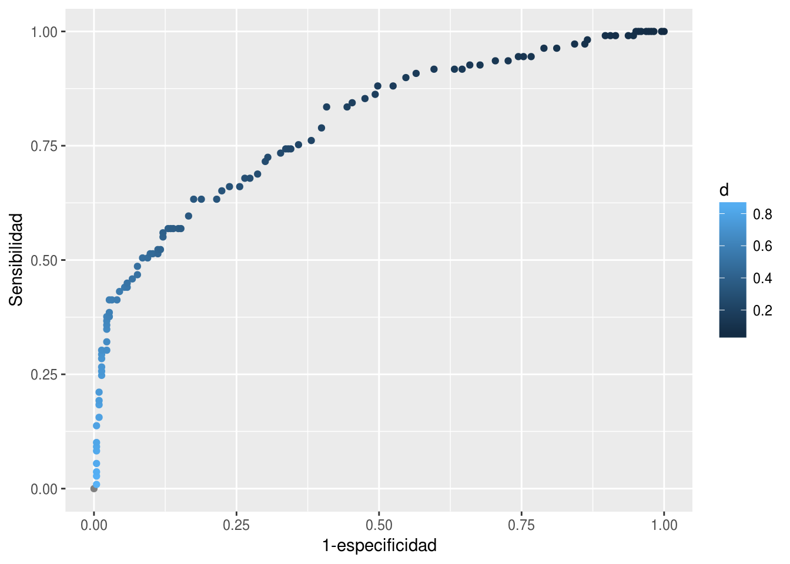
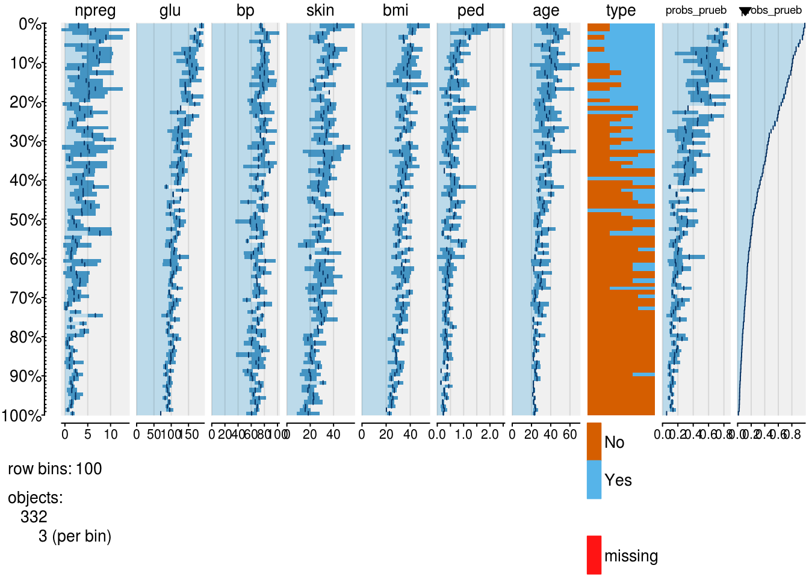
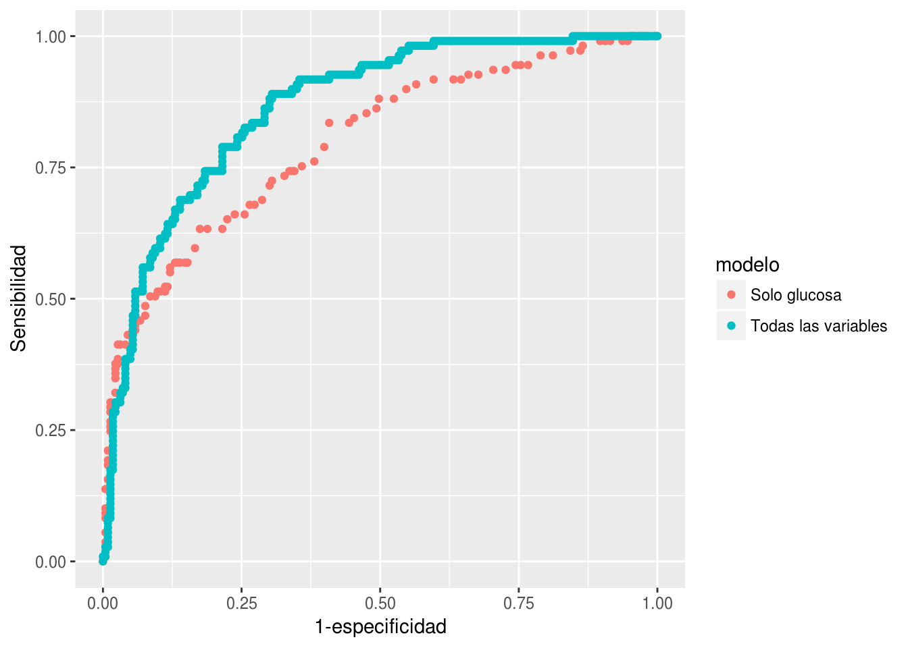

Clase 4 Más sobre problemas de clasificación
En esta parte presentamos técnicas adicionales para evaluar el desempeño de un modelo. En la parte anterior vimos que
La devianza es una buena medida para ajustar y evaluar el desempeño de un modelo y comparar modelos, y utiliza las probabilidades de clase. Sin embargo, es una medida de dificil de interpretar en cuanto a los errores que podemos esperar del modelo.
Por otro lado, la tasa de clasificación incorrecta puede usarse para evaluar el desempeño de un clasificador (incluyendo uno derivado de probabilidades de clase), puede interpretarse con facilidad, pero se queda corta en muchas aplicaciones. Una deficiencia grande de esta medida es que, contrario al problema de regresión, hay errores de clasificación que son cualitativamente diferentes.
Ejemplo
Por ejemplo, diagnosticar a alguien con una enfermedad cuando no la tiene tiene consecuencias distintas a diagnosticar como libre de enfermedad a alguien que la tiene. Estas consecuencias dependen de cómo son son los tratamientos consecuentes, de y qué tan peligrosa es la enfermedad.
Cuando usamos un buscador como Google, es cualitativamente diferente que el buscador omita resultados relevantes a que nos presente resultados irrelevantes.
¿Otros ejemplos?
En general, los costos de los distintos errores son distintos, y en muchos problemas quiséramos entenderlos y controlarlos individualmente. Aunque en teoría podríamos asignar costos a los errores y definir una función de pérdida apropiada, en la práctica esto muchas veces no es tan fácil o deseable. Podemos, sin embargo, reportar el tipo de errores que ocurren
Matriz de confusión. Sea \(\hat{G}\) un clasificador binario. La matriz de confusión \(C\) de \(\hat{G}\) está dada por
$C_{i,j} = \(\text{Número de casos de la clase verdadera j que son clasificados como clase i por el clasificador}\)Ejemplo
En un ejemplo de tres clases, podríamos obtener la matriz de confusión:
| A | B | C | |
|---|---|---|---|
| A.pred | 50 | 2 | 0 |
| B.pred | 20 | 105 | 10 |
| C.pred | 20 | 10 | 30 |
Esto quiere decir que de 90 casos de clase \(A\), sólo clasificamos a 50 en la clase correcta, de 117 casos de clase \(B\), acertamos en 105, etcétera. Podemos ver esta tabla de distintas formas, por ejemplo, usando porcentajes por columna, nos dice cómo se distribuyen los casos de cada clase:
knitr::kable(round(prop.table(tabla_1, 2),2))| A | B | C | |
|---|---|---|---|
| A.pred | 0.56 | 0.02 | 0.00 |
| B.pred | 0.22 | 0.90 | 0.25 |
| C.pred | 0.22 | 0.09 | 0.75 |
Mientras que una tabla de porcentajes por renglón nos muestra qué pasa cada vez que hacemos una predicción dada:
knitr::kable(round(prop.table(tabla_1, 1),2))| A | B | C | |
|---|---|---|---|
| A.pred | 0.96 | 0.04 | 0.00 |
| B.pred | 0.15 | 0.78 | 0.07 |
| C.pred | 0.33 | 0.17 | 0.50 |
Ahora pensemos cómo podría sernos de utilidad esta tabla. Discute
El clasificador fuera uno de severidad de emergencias en un hospital, donde A=requiere atención inmediata B=urgente C=puede posponerse.
El clasificador fuera de tipos de cliente de un negocio. Por ejemplo, A = cliente de gasto potencial alto, B=cliente medio, C=abandonador. Imagínate que tiene un costo intentar conservar a un abandonador, y hay una inversión alta para tratar a los clientes A.
La tasa de incorrectas es la misma en los dos ejemplos, pero la adecuación del clasificador es muy diferente.
4.1 Análisis de error para clasificadores binarios
Cuando la variable a predecir es binaria (dos clases), podemos etiquetar una clase como positivo y otra como negativo. En el fondo no importa cómo catalogemos cada clase, pero para problemas particulares una asignación puede ser más natural. Por ejemplo, en diagnóstico de enfermedades, positivo=tiene la enfermedad, en análisis de crédito, positivo=cae en impago, en sistemas de recomendacion, positivo = le gusta el producto X, en recuperación de textos, positivo=el documento es relevante a la búsqueda, etc.
Hay dos tipos de errores en un clasificador binario (positivo - negativo):
- Falsos positivos (fp): clasificar como positivo a un caso negativo.
- Falsos negativos (fn): clasificar como negativo a un caso positivo.
La matriz de confusion es entonces
library(dplyr)
tabla <- data_frame('-' = c('positivo.pred','negativo.pred','total'),
'positivo'=c('pv','fn','pos'),
'negativo'=c('fp','nv','neg'),
'total' = c('pred.pos','pred.neg',''))
knitr::kable(tabla)posi tivo nega tivo tota l positivo.pred pv fp pred.pos negativo.pred fn nv pred.neg total pos neg
Nótese que un clasificador bueno, en general, es uno que tiene la mayor parte de los casos en la diagonal de la matriz de confusión.
Podemos estudiar a nuestro clasificador en términos de las proporciones de casos que caen en cada celda, que dependen del desempeño del clasificador en cuanto a casos positivos y negativos. La nomenclatura es confusa, pues en distintas áreas se usan distintos nombres para estas proporciones:
Tasa de falsos positivos \[\frac{fp}{fp+nv}=\frac{fp}{neg}\]
Tasa de falsos negativos \[\frac{fn}{pv+fn}=\frac{fn}{pos}\]
Especificidad \[\frac{nv}{fp+nv}=\frac{nv}{neg}\]
Sensibilidad o Recall \[\frac{pv}{pv+fn}=\frac{pv}{pos}\]
Y también otras que tienen como base las predicciones:
Valor predictivo positivo o Precisión \[\frac{vp}{vp+fp}=\frac{vp}{pred.pos}\]
Valor predictivo negativo \[\frac{vn}{fn+vn}=\frac{vn}{pred.neg}\]
Y hay varias medidas resumen que ponderan de distinta forma
Tasa de clasificación incorrecta \[\frac{fn+fv}{neg+pos}\]
Medida F (media armónica de precisión y recall) \[2\frac{precision \cdot recall}{precision + recall}\]
AUC (area bajo la curva ROC) ver más adelante
Kappa \[\kappa = \frac{p_o - p_e}{1-p_e},\] donde \(p_o =\) tasa de correctos, y \(p_e\) es la probabilidad de clasificar correctamente al azar, dado por \[p_e = \frac{pos}{total}\frac{pred.pos}{total} + \frac{neg}{total}\frac{pred.neg}{total}\]
Dependiendo de el tema y el objetivo hay medidas más naturales que otras:
- En pruebas clínicas, se usa típicamente sensibilidad y especificidad (proporción de positivos que detectamos y proporción de negativos que descartamos).
- En búsqueda y recuperación de documentos (positivo=el documento es relevante, negativo=el documento no es relevante), se usa precisión y recall (precisión=de los documentos que entregamos (predicción positiva), cuáles son realmente positivos/relevantes, y recall=de todos los documentos relevantes, cuáles devolvemos). Aquí la tasa de falsos positivos (de todos los negativos, cuáles se predicen positivos), por ejemplo, no es de ayuda pues generalmente son bajas y no discriminan el desempeño de los clasificadores. La razón es que típicamente hay una gran cantidad de negativos, y se devuelven relativamente pocos documentos, de forma que la tasa de falsos positivos generalmente es muy pequeña.
- \(\kappa\) señala un problema importante cuando interpretamos tasas de correctos. Por ejemplo, supongamos que hay un 85% de positivos y un 15% de negativos. Si nuestro clasificador clasifica todo a positivo, nuestra tasa de correctos sería 85% - pero nuestro clasificador no está aprovechando los datos. En este caso, \[p_e = 0.85(1) + 0.15(0)= 0.85\], y tenemos que \(\kappa = 0\) (similar al azar). Supongamos por otra parte que escogemos 50% del tiempo positivo al azar. Esto quiere decir que tendríamos \(p_o=0.5\). Pero \[p_e = 0.85(0.50) + 0.15(0.50) = 0.50,\] de modo que otra vez \(\kappa = 0\). \(\kappa\) es un valor entre 0 y 1 que mide qué tan superior es nuestro clasificador a uno dado al azar (uno que la predicción no tiene qué ver con la clase verdadera).
Ejercicio
¿Qué relaciones hay entre las cantidades mostradas arriba? Por ejemplo: Escribe la tasa de clasificación incorrecta en términos de especificidad y sensibilidad. También intenta escribir valor predictivo positivo y valor predictivo negativo en términos de sensibilidad y especificidad.
Ejercicio
Calcular la matriz de confusión (sobre la muestra de prueba) para el clasificador logístico de diabetes en términos de glucosa. Calcula adicionalmente con la muestra de prueba sus valores de especificidad y sensibilidad, y precisión y recall.
library(dplyr)
library(tidyr)
library(ggplot2)
diabetes_ent <- as_data_frame(MASS::Pima.tr)
diabetes_pr <- as_data_frame(MASS::Pima.te)
mod_1 <- glm(type ~ glu, data = diabetes_ent, family = 'binomial')
preds_prueba <- predict(mod_1, newdata = diabetes_pr, type ='response')4.1.1 Punto de corte para un clasificador binario
¿Qué sucede cuando el perfil de sensibilidad y especificidad de un clasificador binario no es apropiado para nuestros fines? Recordemos que una vez que hemos estimado con \(\hat{p}_1(x)\), nuestra regla de clasificación es:
- Predecir positivo si \(\hat{p}_1(x) > 0.5\),
- Predecir negativo si \(\hat{p}_1(x) \leq 0.5.\)
Esto sugiere una regla alternativa:
Para \(0 < d < 1\), podemos utilizar nuestras estimaciones \(\hat{p}_1(x)\) para construir un clasificador alternativo poniendo:
- Predecir positivo si \(\hat{p}_1(x) > d\),
- Predecir negativo si \(\hat{p}_1(x) \leq d\).
Distintos valores de \(d\) dan distintos perfiles de sensibilidad-especificidad para una misma estimación de las probabilidades condicionales de clase: Para minimizar la tasa de incorrectos conviene poner \(d = 0.5\). Sin embargo, es común que este no es el único fin de un clasificador bueno (pensar en ejemplo de fraude).
- Cuando incrementamos d, quiere decir que exigimos estar más seguros de que un caso es positivo para clasificarlo como positivo. Eso quiere decir que la especifidad va a ser más grande (entre los negativos verdaderos va a haber menos falsos positivos). Sin embargo, la sensibilidad va a ser más chica pues captamos menos de los verdaderos positivos.
Ejemplo
Por ejemplo, si en el caso de diabetes incrementamos el punto de corte a 0.7:
table(preds_prueba > 0.7, diabetes_pr$type)##
## No Yes
## FALSE 220 77
## TRUE 3 32tab <- prop.table(table(preds_prueba > 0.7, diabetes_pr$type),2)
tab##
## No Yes
## FALSE 0.98654709 0.70642202
## TRUE 0.01345291 0.29357798La especificidad ahora 0.99 , muy alta (descartamos muy bien casos negativos), pero la sensibilidad se deteriora a 0.29
- Cuando hacemos más chico d, entonces exigimos estar más seguros de que un caso es negativo para clasificarlo como negativo. Esto aumenta la sensibilidad, pero la especificidad baja. Por ejemplo, si en el caso de diabetes ponemos el punto de corte en 0.3:
table(preds_prueba > 0.3, diabetes_pr$type)##
## No Yes
## FALSE 170 37
## TRUE 53 72tab <- prop.table(table(preds_prueba > 0.3, diabetes_pr$type),2)
tab##
## No Yes
## FALSE 0.7623318 0.3394495
## TRUE 0.2376682 0.66055054.1.2 Espacio ROC de clasificadores
Podemos visualizar el desempeño de cada uno de estos clasificadores mapeándolos a las coordenadas de tasa de falsos positivos (1-especificidad) y sensibilidad:
clasif_1 <- data.frame(
corte = c('0.3','0.5','0.7','perfecto','azar'),
tasa_falsos_pos=c(0.24,0.08,0.02,0,0.7),
sensibilidad =c(0.66, 0.46,0.19,1,0.7))
ggplot(clasif_1, aes(x=tasa_falsos_pos, y=sensibilidad,
label=corte)) + geom_point() +
geom_abline(intercept=0, slope=1) +
xlim(c(0,1)) +ylim(c(0,1)) + geom_text(hjust=-0.3, col='red')+
xlab('1-especificidad (tasa falsos pos)')
- Nótese que agregamos otros dos clasificadores, uno perfecto, que tiene tasa de falsos positivos igual a 0 y sensibilidad igual a 1.
- En esta gráfica, un clasificador \(G_2\) que está arriba a la izquierda de \(G_1\) domina a \(G_1\), pues tiene mejor especificidad y mejor sensibilidad. Entre los clasificadores 0.3, 0.5 y 0.7 de la gráfica, no hay ninguno que domine a otro.
- Todos los clasificadores en la diagonal son equivalentes a un clasificador al azar. ¿Por qué? La razón es que si cada vez que vemos un nuevo caso lo clasificamos como positivo con probabilidad \(p\) fija y arbitraria. Esto implica que cuando veamos un caso positivo, la probabilidad de ’atinarle’ es de p (sensibilidad), y cuando vemos un negativo, la probabilidad de equivocarnos también es de p (tasa de falsos positivos). De modo que este clasificador al azar está en la diagonal.
- ¿Qué podemos decir acerca de clasificadores que caen por debajo de la diagonal? Estos son clasificadores particularmente malos, pues existen clasificadores con mejor especificidad y/o sensibilidad que son clasificadores al azar! Sin embargo, se puede construir un mejor clasificador volteando las predicciones, lo que cambia sensibilidad por tasa de falsos positivos.
- ¿Cuál de los tres clasificadores es el mejor? En términos de la tasa de incorrectos, el de corte 0.5. Sin embargo, para otros propósitos puede ser razonable escoger alguno de los otros.
4.2 Perfil de un clasificador binario y curvas ROC
En lugar de examinar cada punto de corte por separado, podemos hacer el análisis de todos los posibles puntos de corte mediante la curva ROC (receiver operating characteristic, de ingeniería).Ejemplo
library(tabplot)
mod_1 <- glm(type ~ glu, diabetes_ent, family = 'binomial')
diabetes_pr$probs_prueba_1 <- predict(mod_1, newdata = diabetes_pr,
type = "response")
head(arrange(diabetes_pr, desc(probs_prueba_1)))## # A tibble: 6 x 9
## npreg glu bp skin bmi ped age type probs_prueba_1
## <int> <int> <int> <int> <dbl> <dbl> <int> <fctr> <dbl>
## 1 2 197 70 45 30.5 0.158 53 Yes 0.8743254
## 2 4 197 70 39 36.7 2.329 31 No 0.8743254
## 3 8 196 76 29 37.5 0.605 57 Yes 0.8701147
## 4 1 196 76 36 36.5 0.875 29 Yes 0.8701147
## 5 3 193 70 31 34.9 0.241 25 Yes 0.8567582
## 6 5 189 64 33 31.2 0.583 29 Yes 0.8371927tableplot(diabetes_pr, sortCol = probs_prueba_1)
La columna de probabilidad de la derecha nos dice en qué valores podemos cortar para obtener distintos clasificadores. Nótese que si cortamos más arriba, se nos escapan más positivos verdaderos que clasificamos como negativos, pero clasificamos a más negativos verdaderos como negativos. Lo opuesto ocurre cuando cortamos más abajo.
Vamos a graficar todos los pares (1-especificidad, sensibilidad) para cada punto de corte \(d\) de estas probabilidades.
library(ROCR)
pred_rocr <- prediction(diabetes_pr$probs_prueba_1, diabetes_pr$type)
perf <- performance(pred_rocr, measure = "sens", x.measure = "fpr")
graf_roc_1 <- data_frame(tfp = perf@x.values[[1]], sens = perf@y.values[[1]],
d = perf@alpha.values[[1]])
ggplot(graf_roc_1, aes(x = tfp, y = sens, colour=d)) + geom_point() +
xlab('1-especificidad') + ylab('Sensibilidad') 
En esta gráfica podemos ver todos los clasificadores posibles basados en las probabilidades de clase. Podemos usar estas curvas como evaluación de nuestros clasificadores, dejando para más tarde la selección del punto de corte, si esto es necesario (por ejemplo, dependiendo de los costos de cada tipo de error).
También podemos definir una medida resumen del desempeño de un clasificador según esta curva:
auc_1 <- performance(pred_rocr, measure = 'auc')@y.values
auc_1## [[1]]
## [1] 0.7970543También es útil para comparar modelos. Consideremos el modelo de los datos de diabetes que incluyen todas las variables:
mod_2 <- glm(type ~ ., diabetes_ent, family = 'binomial')
diabetes_pr$probs_prueba_2 <- predict(mod_2, newdata = diabetes_pr,
type = "response")
head(arrange(diabetes_pr, desc(probs_prueba_2)))## # A tibble: 6 x 10
## npreg glu bp skin bmi ped age type probs_prueba_1
## <int> <int> <int> <int> <dbl> <dbl> <int> <fctr> <dbl>
## 1 0 180 78 63 59.4 2.420 25 Yes 0.7854027
## 2 4 197 70 39 36.7 2.329 31 No 0.8743254
## 3 5 187 76 27 43.6 1.034 53 Yes 0.8266286
## 4 3 173 82 48 38.4 2.137 25 Yes 0.7374869
## 5 0 173 78 32 46.5 1.159 58 No 0.7374869
## 6 17 163 72 41 40.9 0.817 47 Yes 0.6581611
## # ... with 1 more variables: probs_prueba_2 <dbl>tableplot(diabetes_pr, sortCol = probs_prueba_2)
Y graficamos juntas:
library(ROCR)
pred_rocr <- prediction(diabetes_pr$probs_prueba_2, diabetes_pr$type)
perf <- performance(pred_rocr, measure = "sens", x.measure = "fpr")
auc_2 <- performance(pred_rocr, measure = "auc")@y.values
graf_roc_2 <- data_frame(tfp = perf@x.values[[1]], sens = perf@y.values[[1]],
d = perf@alpha.values[[1]])
graf_roc_2$modelo <- 'Todas las variables'
graf_roc_1$modelo <- 'Solo glucosa'
graf_roc <- bind_rows(graf_roc_1, graf_roc_2)
ggplot(graf_roc, aes(x = tfp, y = sens, colour = modelo)) + geom_point() +
xlab('1-especificidad') + ylab('Sensibilidad') 
Comparación auc:
auc_1## [[1]]
## [1] 0.7970543auc_2## [[1]]
## [1] 0.8658823En este ejemplo, vemos que casi no importa que perfil de especificidad y sensibilidad busquemos: el clasificador que usa todas las variables domina casi siempre al clasificador que sólo utiliza las variables de glucosa. La razón es que para cualquier punto de corte (con sensibilidad menor a 0.4) en el clasificador de una variable, existe otro clasificador en la curva roja (todas las variable), que domina al primero. La excepción es para clasificadores de valores de sensibilidad baja, con tasas de falsos positivos muy chicas: en este caso, el modelo de una variable puede ser ligeramente superior.
4.3 Regresión logística para problemas de más de 2 clases
Consideramos ahora un problema con más de dos clases, de manera que \(G ∈ {1,2,...,K}\) (\(K\) clases), y tenemos \(X = (X1 ...,Xp)\) entradas. ¿Cómo generalizar el modelo de regresión logística a este problema? Una estrategia es la de uno contra todos:
En clasificación uno contra todos, hacemos
Para cada clase \(g\in\{1,\ldots,K\}\) entrenamos un modelo de regresión logística (binaria) \(\hat{p}^{(g)}(x)\), tomando como positivos a los casos de 1 clase \(g\), y como negativos a todo el resto. Esto lo hacemos como en las secciones anteriores, y de manera independiente para cada clase.
Para clasificar un nuevo caso \(x\), calculamos \[\hat{p}^{(1)}, \hat{p}^{(2)},\ldots, \hat{p}^{(K)}\]
y clasificamos a la clase de máxima probabilidad \[\hat{G}(x) = \arg\max_g \hat{p}^{(g)}(x)\] Nótese que no hay ninguna garantía de que las probabilidades de clase sumen 1, pues se trata de estimaciones independientes de cada clase. En este sentido, produce estimaciones que en realidad no satisfacen las propiedades del modelo de probabilidad establecido. Sin embargo, esta estrategia es simple y en muchos casos funciona bien.
4.3.1 Regresión logística multinomial
Si queremos obtener estimaciones de las probabilidades de clase que sumen uno, entonces tenemos que contruir las estimaciones de cada clase de clase de manera conjunta. Como vimos antes, tenemos que estimar, para cada \(x\) y \(g\in\{1,\ldots, K\}\), las probabilidades condicionales de clase: \[p_g(x) = P(G = g|X = x).\]
Consideremos primero cómo funciona el modelo de regresión logística (2 clases)
Tenemos que \[p_1(x) = h(\beta_0 + \beta_1x_1 + \ldots + \beta_p x_p) = \exp(\beta_0 + \beta_1x_1 + \ldots + \beta_p x_p)/Z \] y \[p_2 (x) = 1/Z\] donde \(Z = 1 + \exp(\beta_0 + \beta_1x_1 + \ldots + \beta_p x_p)\).
Podemos generalizar para más de 2 clases usando una idea similar:
\[p_1(x) = \exp(\beta_{0,1} + \beta_{1,1}x_1 + \ldots + \beta_{p,1} x_p)/Z\]
\[p_2(x) = \exp(\beta_{0,2} + \beta_{1,2}x_2 + \ldots + \beta_{p.2} x_p)/Z\] hasta \[p_{K-1}(x) = \exp(\beta_{0,{K-1}} + \beta_{1,{K-1}}x_2 + \ldots + \beta_{p,{K-1}} x_p)/Z\] y \[p_K(x) = 1/Z\]
En este caso, para que las probabilidades sumen 1, necesitamos que \[Z = 1 + \sum_{j=1}^{K-1}\exp(\beta_0^j + \beta_1^jx_2 + \ldots + \beta_p^j x_p)\]
Para ajustar coeficientes, usamos el mismo criterio de devianza de entrenamiento. Buscamos minimizar: \[D(\beta)=−2 \sum_{i=1}^N p_{g^{(i)}}(x^{(i)}),\] Donde \(\beta\) contiene todos los coeficientes organizados en un vector de tamaño \((p+1)(K+1)\): \[\beta = ( \beta_0^1, \beta_1^1, \ldots , \beta_p^1, \beta_0^2, \beta_1^2, \ldots , \beta_p^2, \ldots \beta_0^{K-1}, \beta_1^{K-1}, \ldots , \beta_p^{K-1} )\]
Y ahora podemos usar algún método númerico para minimizar la devianza (por ejemplo, descenso en gradiente). Cuando es muy importante tener probabilidades bien calibradas, el enfoque multinomial es más apropiado, pero muchas veces, especialmente si sólo nos interesa clasificar, los dos métodos dan resultados similares.
4.3.2 Interpretación de coeficientes
Los coeficientes mostrados en la parametrización de arriba se intrepretan más fácilmente como comparaciones de la clase \(j\) contra la clase \(K\), pues
\[\log\left (\frac{p_g(x)}{p_K(x)}\right ) = \beta_{0,{g}} + \beta_{1,{g}}x_2 + \ldots + \beta_{p,{g}} x_p\]
Para comparar la clase \(j\) con la clase \(k\) notamos que
\[\log\left (\frac{p_j(x)}{p_k(x)}\right ) = (\beta_{0,{j}}- \beta_{0,{k}}) + (\beta_{1,{j}}-\beta_{1,{k}} )x_2 + \ldots + (\beta_{p,{j}} -\beta_{p,{k}}) x_p\]
Así que sólo hace falta restar los coeficientes. Nótese adicionalmente que en la parametrización, podemos pensar que
\[\beta_{0,K} = \beta_{1,K} = \cdots = \beta_{p,K} = 0\]
4.3.3 Ejemplo: Clasificación de dígitos con regresión multinomial
library(readr)
digitos_entrena <- read_csv('datos/zip-train.csv')## Parsed with column specification:
## cols(
## .default = col_double()
## )## See spec(...) for full column specifications.digitos_prueba <- read_csv('datos/zip-test.csv')## Parsed with column specification:
## cols(
## .default = col_double()
## )
## See spec(...) for full column specifications.names(digitos_entrena)[1] <- 'digito'
names(digitos_entrena)[2:257] <- paste0('pixel_', 1:256)
names(digitos_prueba)[1] <- 'digito'
names(digitos_prueba)[2:257] <- paste0('pixel_', 1:256)En este ejemplo, usamos la función multinom de nnet, que usa BFGS para hacer la optimización:
library(nnet)
mod_mult <- multinom(digito ~ ., data = digitos_entrena, MaxNWt=100000, maxit = 20)## # weights: 2580 (2313 variable)
## initial value 16788.147913
## iter 10 value 2598.959017
## iter 20 value 1494.978090
## final value 1494.978090
## stopped after 20 iterationsChecamos para diagnóstico la matriz de confusión de entrenamiento.
table(predict(mod_mult), digitos_entrena$digito)##
## 0 1 2 3 4 5 6 7 8 9
## 0 1153 0 5 2 3 9 1 1 7 0
## 1 0 998 0 0 2 0 1 1 2 3
## 2 2 0 693 1 7 2 8 3 10 2
## 3 9 0 15 632 2 21 0 2 24 2
## 4 3 2 9 2 621 4 4 9 10 44
## 5 24 4 5 19 9 511 43 1 34 6
## 6 2 0 0 0 1 3 607 0 0 0
## 7 0 0 1 0 0 1 0 613 1 8
## 8 1 1 3 2 2 4 0 1 451 2
## 9 0 0 0 0 5 1 0 14 3 577Ahora validamos con la muestra de prueba y calculamos error de clasificación:
confusion_prueba <- table(predict(mod_mult, newdata = digitos_prueba), digitos_prueba$digito)
confusion_prueba##
## 0 1 2 3 4 5 6 7 8 9
## 0 335 0 3 0 3 6 4 0 3 0
## 1 0 252 0 0 1 0 0 0 1 3
## 2 1 1 171 4 8 0 5 2 3 2
## 3 3 3 8 145 1 18 0 3 12 0
## 4 3 6 7 1 176 1 2 6 8 16
## 5 11 1 5 13 2 130 13 2 14 1
## 6 4 1 1 0 2 0 143 0 1 0
## 7 0 0 1 1 2 1 0 130 1 5
## 8 1 0 2 1 2 1 3 0 118 0
## 9 1 0 0 1 3 3 0 4 5 150sum(diag(confusion_prueba))/sum(confusion_prueba)## [1] 0.8719482round(prop.table(confusion_prueba, 2),2)##
## 0 1 2 3 4 5 6 7 8 9
## 0 0.93 0.00 0.02 0.00 0.02 0.04 0.02 0.00 0.02 0.00
## 1 0.00 0.95 0.00 0.00 0.00 0.00 0.00 0.00 0.01 0.02
## 2 0.00 0.00 0.86 0.02 0.04 0.00 0.03 0.01 0.02 0.01
## 3 0.01 0.01 0.04 0.87 0.00 0.11 0.00 0.02 0.07 0.00
## 4 0.01 0.02 0.04 0.01 0.88 0.01 0.01 0.04 0.05 0.09
## 5 0.03 0.00 0.03 0.08 0.01 0.81 0.08 0.01 0.08 0.01
## 6 0.01 0.00 0.01 0.00 0.01 0.00 0.84 0.00 0.01 0.00
## 7 0.00 0.00 0.01 0.01 0.01 0.01 0.00 0.88 0.01 0.03
## 8 0.00 0.00 0.01 0.01 0.01 0.01 0.02 0.00 0.71 0.00
## 9 0.00 0.00 0.00 0.01 0.02 0.02 0.00 0.03 0.03 0.85El resultado no es muy bueno. Veremos más adelante mejores métodos para este problema. ¿Podemos interpretar el modelo?
Una idea es tomar los coeficientes y graficarlos según la estructura de las imágenes:
coefs <- coef(mod_mult)
coefs_reng <- coefs[1, , drop =FALSE]
coefs <- rbind(coefs_reng, coefs)
coefs[1 , ] <- 0
dim(coefs)## [1] 10 257beta_df <- coefs[,-1] %>% as.data.frame %>%
mutate(digito = 0:(nrow(coefs)-1)) %>%
gather(pixel, valor, contains('pixel')) %>%
separate(pixel, into = c('str','pixel_no'), sep='_') %>%
mutate(x = (as.integer(pixel_no)-1) %% 16, y = -((as.integer(pixel_no)-1) %/% 16))
head(beta_df)## digito str pixel_no valor x y
## 1 0 pixel 1 0.000000000 0 0
## 2 1 pixel 1 0.621681333 0 0
## 3 2 pixel 1 -0.005914605 0 0
## 4 3 pixel 1 0.044257959 0 0
## 5 4 pixel 1 0.190966643 0 0
## 6 5 pixel 1 -0.010655932 0 0Podemos cruzar la tabla con sí misma para hacer comparaciones:
tab_coef <- beta_df %>% select(digito, x, y, valor)
tab_coef_1 <- tab_coef
names(tab_coef_1) <- c('digito_1','x','y','valor_1')
tab_cruzada <- full_join(tab_coef_1, tab_coef) %>% mutate(dif = valor_1 - valor)## Joining, by = c("x", "y")tab_cruzada <- tab_cruzada %>% group_by(digito, digito_1) %>%
mutate(dif_s = (dif - mean(dif))/sd(dif)) %>%
mutate(dif_p = pmin(pmax(dif_s, -2), 2))ggplot(tab_cruzada, aes(x=x, y=y)) + geom_tile(aes(fill = dif_p)) +
facet_grid(digito_1~digito)+scale_fill_distiller(palette = "Spectral")
Discusión
Nótese que no corrimos el modelo hasta convergencia. Vamos a hacerlo ahora:
mod_mult <- multinom(digito ~ ., data = digitos_entrena, MaxNWt=100000, maxit = 500)## # weights: 2580 (2313 variable)
## initial value 16788.147913
## iter 10 value 2598.959017
## iter 20 value 1494.978090
## iter 30 value 903.291402
## iter 40 value 443.785686
## iter 50 value 260.626756
## iter 60 value 190.835491
## iter 70 value 160.773160
## iter 80 value 114.048146
## iter 90 value 88.746976
## iter 100 value 76.302570
## iter 110 value 63.400188
## iter 120 value 54.375215
## iter 130 value 46.291174
## iter 140 value 38.303470
## iter 150 value 28.822810
## iter 160 value 17.888648
## iter 170 value 9.531256
## iter 180 value 2.985614
## iter 190 value 0.714996
## iter 200 value 0.209654
## iter 210 value 0.066710
## iter 220 value 0.030412
## iter 230 value 0.014036
## iter 240 value 0.006702
## iter 250 value 0.004146
## iter 260 value 0.001844
## iter 270 value 0.001128
## iter 280 value 0.000744
## iter 290 value 0.000462
## iter 300 value 0.000308
## iter 310 value 0.000265
## iter 320 value 0.000231
## final value 0.000076
## convergedconfusion_prueba <- table(predict(mod_mult, newdata = digitos_prueba), digitos_prueba$digito)
confusion_prueba##
## 0 1 2 3 4 5 6 7 8 9
## 0 332 0 6 2 4 2 1 2 7 2
## 1 0 242 1 3 3 4 1 2 0 2
## 2 2 2 148 5 5 0 4 3 3 0
## 3 4 1 9 128 4 10 0 3 2 4
## 4 3 5 8 0 149 8 6 7 5 2
## 5 0 1 3 11 5 116 8 0 10 1
## 6 5 7 4 3 10 4 144 0 4 1
## 7 2 1 3 1 4 1 1 125 2 4
## 8 6 3 14 7 6 10 4 0 132 3
## 9 5 2 2 6 10 5 1 5 1 158sum(diag(confusion_prueba))/sum(confusion_prueba)## [1] 0.8340807round(prop.table(confusion_prueba, 2),2)##
## 0 1 2 3 4 5 6 7 8 9
## 0 0.92 0.00 0.03 0.01 0.02 0.01 0.01 0.01 0.04 0.01
## 1 0.00 0.92 0.01 0.02 0.02 0.02 0.01 0.01 0.00 0.01
## 2 0.01 0.01 0.75 0.03 0.02 0.00 0.02 0.02 0.02 0.00
## 3 0.01 0.00 0.05 0.77 0.02 0.06 0.00 0.02 0.01 0.02
## 4 0.01 0.02 0.04 0.00 0.74 0.05 0.04 0.05 0.03 0.01
## 5 0.00 0.00 0.02 0.07 0.02 0.72 0.05 0.00 0.06 0.01
## 6 0.01 0.03 0.02 0.02 0.05 0.02 0.85 0.00 0.02 0.01
## 7 0.01 0.00 0.02 0.01 0.02 0.01 0.01 0.85 0.01 0.02
## 8 0.02 0.01 0.07 0.04 0.03 0.06 0.02 0.00 0.80 0.02
## 9 0.01 0.01 0.01 0.04 0.05 0.03 0.01 0.03 0.01 0.89Y nota que el error es más grande que cuando nos detuvimos antes. Discute en clase:
- Grafica los coeficientes para este segundo modelo
- ¿En cuál de los dos modelos es más fácil interpretar los coeficientes? ¿En cuál es menor el error?
- ¿Cuál crees que es el problema de este segundo modelo comparado con el primero? ¿Por qué crees que sucede? ¿Cómo podríamos corregir este problema?
4.4 Descenso en gradiente para regresión multinomial logística
Supondremos \(K\) clases, numeradas de \(0,1,\ldots, K-1\). OJO: al aplicar este código debes ser cuidadoso con las etiquetas de clase.
pred_ml <- function(x, beta){
p <- ncol(x)
K <- length(beta)/(p+1) + 1
beta_mat <- matrix(beta, K - 1, p + 1 , byrow = TRUE)
u_beta <- exp(as.matrix(cbind(1, x)) %*% t(beta_mat))
Z <- 1 + apply(u_beta, 1, sum)
p_beta <- cbind(u_beta, 1)/Z
as.matrix(p_beta)
}
devianza_calc <- function(x, y){
dev_fun <- function(beta){
p_beta <- pred_ml(x, beta)
p <- sapply(1:nrow(x), function(i) p_beta[i, y[i]+1])
-2*sum(log(p))
}
dev_fun
}
grad_calc <- function(x_ent, y_ent){
p <- ncol(x_ent)
K <- length(unique(y_ent))
y_fact <- factor(y_ent)
# matriz de indicadoras de clase
y_dummy <- model.matrix(~-1 + y_fact)
salida_grad <- function(beta){
p_beta <- pred_ml(x_ent, beta)
e_mat <- (y_dummy - p_beta)[, -K]
grad_out <- -2*(t(cbind(1,x_ent)) %*% e_mat)
as.numeric(grad_out)
}
salida_grad
}
descenso <- function(n, z_0, eta, h_deriv, dev_fun){
z <- matrix(0,n, length(z_0))
z[1, ] <- z_0
for(i in 1:(n-1)){
z[i+1, ] <- z[i, ] - eta * h_deriv(z[i, ])
if(i %% 100 == 0){
print(paste0(i, ' Devianza: ', dev_fun(z[i+1, ])))
}
}
z
}x_ent <- digitos_entrena %>% select(contains('pixel')) %>% as.matrix
y_ent <- digitos_entrena$digito
x_ent_s <- scale(x_ent)
medias <- attr(x_ent_s, 'scaled:center')
sd <- attr(x_ent_s, 'scaled:scale')
x_pr <- digitos_prueba %>% select(contains('pixel')) %>% as.matrix
y_pr <- digitos_prueba$digito
beta <- runif(257*9)
dev_ent <- devianza_calc(x_ent_s, y_ent)
grad <- grad_calc(x_ent_s, y_ent)
dev_ent(beta)## [1] 258253.5Hacemos algunas revisiiones del gradiente:
beta_2 <- beta
epsilon <- 0.00001
beta_2[1000] <- beta[1000] + epsilon
(dev_ent(beta_2) - dev_ent(beta))/epsilon## [1] -801.8901grad(beta)[1000]## [1] -801.8919Ya ahora podemos hacer descenso:
iteraciones <- descenso(2000, rep(0, 257*9), eta=0.001,
h_deriv = grad, dev_fun = dev_ent)## [1] "100 Devianza: 817.809554010357"
## [1] "200 Devianza: 408.010947736697"
## [1] "300 Devianza: 289.951542494061"
## [1] "400 Devianza: 227.805737974779"
## [1] "500 Devianza: 190.43408903327"
## [1] "600 Devianza: 165.487702748531"
## [1] "700 Devianza: 147.301091651991"
## [1] "800 Devianza: 133.221066964653"
## [1] "900 Devianza: 121.903186824327"
## [1] "1000 Devianza: 112.560175747607"
## [1] "1100 Devianza: 104.688785448699"
## [1] "1200 Devianza: 97.9483674585563"
## [1] "1300 Devianza: 92.0984398108757"
## [1] "1400 Devianza: 86.9631199039947"
## [1] "1500 Devianza: 82.4103777725155"
## [1] "1600 Devianza: 78.3393471851082"
## [1] "1700 Devianza: 74.6718258066508"
## [1] "1800 Devianza: 71.3463032980959"
## [1] "1900 Devianza: 68.3137316150628"x_pr_s <- scale(x_pr, center = medias, scale = sd)
probas <- pred_ml(x_pr_s, iteraciones[2000,])
clase <- apply(probas, 1, which.max)
table(clase - 1, y_pr )## y_pr
## 0 1 2 3 4 5 6 7 8 9
## 0 347 0 4 1 3 3 1 1 7 0
## 1 0 252 0 0 4 0 0 1 0 1
## 2 2 1 168 4 7 1 7 2 5 0
## 3 2 5 5 148 2 6 0 2 1 0
## 4 4 0 5 1 168 2 2 5 2 3
## 5 1 0 2 8 3 139 3 0 6 1
## 6 0 3 2 1 3 2 156 0 2 0
## 7 1 1 4 1 3 0 0 133 2 3
## 8 1 1 8 1 3 5 1 0 136 3
## 9 1 1 0 1 4 2 0 3 5 1661 - mean(clase-1 != y_pr)## [1] 0.9033383Tarea 4
Ver scripts/tarea_4.Rmd.